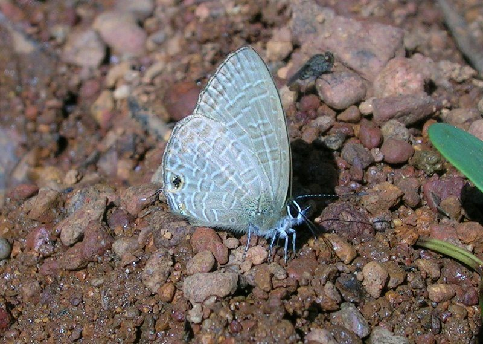

कॉमन लाइनब्लू तितलीCommon Lineblue
Prosotas nora · Lycaenidae · INS-0131

- Scientific name वैज्ञानिक नाम
- Prosotas nora (C. Felder, 1860)
- Family कुल
- Lycaenidae
- Hindi हिंदी
- कॉमन लाइनब्लू तितली
- Local names स्थानीय नाम
- common lineblue, lineblue
- Status here यहाँ की स्थिति
- native
- Movement आवागमन
- Resident, here all year
- Known from कहाँ दर्ज
- Others have published records from the wider Awadh–Purvanchal plain, none yet from Basti–Ayodhya अवध–पूर्वांचल से दूसरों के प्रकाशित अभिलेख, बस्ती–अयोध्या से अभी नहीं
- IUCN IUCN
- not evaluated
- Review समीक्षा
- audited and independently read
When to look कब देखें
Present all year. साल भर मौजूद।
Tell it apart from इनसे अलग पहचानें
कॉमन लाइनब्लू तितली / Common Lineblue
Prosotas nora (C. Felder, 1860) — Lycaenidae
कॉमन लाइनब्लू तितली — छोटी नीली तितली जो बस्ती के बागों और खेतों के किनारों में रहती है। इसके पंख छोटे, नीले रंग के होते हैं और नीचे की तरफ़ सफ़ेद या हल्के धारियाँ होती हैं। यह तितली झाड़ियों और खरपतवारों पर अपने अंडे देती है। इसके कैटरपिलर छोटे हरे होते हैं और पत्तियों को खाते हैं।
Quick Identification त्वरित पहचान
| Feature | Description |
|---|---|
| Size | Very small butterfly, wingspan 16-20 mm |
| Colour | Male: iridescent violet-blue upperside; Female: brownish with white patches |
| Pattern | Fine white or pale lines on underside of wings |
| Shape | Delicate, with narrow wings |
| Underside | Pale grey or white with distinct line patterns |
| Flight | Low, fluttering flight; stays close to host plants |
Field tip: A tiny blue butterfly with rapid, fluttering flight, staying close to the ground and low vegetation. Look for it in gardens, grasslands, and along field margins where flowering plants grow. Often seen visiting flowers or resting on leaves.
हिंदी — कैसे पहचानें: बहुत छोटी नीली तितली, पंख पतले। नीचे सफ़ेद धारियों वाली। खेत के किनारे और बागों में।
Morphology आकारिकी
Biometrics:
| Measurement | Range |
|---|---|
| Wingspan | 16-20 mm |
| Forewing length | 8-10 mm |
| Body length | 6-8 mm |
Wings:
- Upperside (male): Iridescent violet-blue, sometimes with a silvery sheen.
- Upperside (female): Brownish-grey, often with white patches on forewings.
- Underside: Pale grey or whitish with delicate dark lines and markings; often with a white band on hindwing.
Body: Small, grey or brown; antennae clubbed, dark with pale bands.
Sexual dimorphism: Males are iridescent blue; females are duller brown with white patches, making them visually distinct.
Life Cycle / Phenology जीवन चक्र
| Stage / Month | Event |
|---|---|
| January–December | Year-round breeding; multiple overlapping generations |
| Egg | Laid on or near host plants; incubation 5-7 days |
| Larva | Greenish caterpillar; feeds on foliage; 2-3 weeks |
| Pupa | Small, formed on or near host plant; 5-10 days |
| Adult | 2-4 weeks lifespan; most active during monsoon |
हिंदी: साल भर में कई पीढ़ियाँ। बरसात में सबसे ज़्यादा।
Host Plants or Prey आहार
Larval host plants:
- Flowers and flower buds of various plants
- Garden herbs and flowering plants
- Wild herbaceous plants and flowering shrubs
Adult food sources:
- Nectar from flowers
- Pollen
- Damp spots on ground
Predators / Natural Enemies शत्रु
- Small birds: Flycatchers and warblers
- Spiders: Web-building and jumping spiders
- Parasitoid wasps: Attack caterpillars and pupae
Agricultural / Human Relevance कृषि प्रासंगिकता
Minor agricultural role. The caterpillars feed on various garden plants and herbs but cause negligible damage. The species is not considered an agricultural pest.
Garden presence. Common in gardens and cultivated areas where flowering plants provide both food for adults and larval host plants. Its presence indicates diverse garden flora.
Today. This small butterfly is abundant in villages and cultivated landscapes wherever flowering plants grow, particularly during the monsoon and post-monsoon seasons.
हिंदी: बागों में आम, नुकसान नहीं।
Expected Locally स्थानीय रूप से अपेक्षित
Not a field record. Written from published accounts for eastern Uttar Pradesh. No confirmed local sighting yet — if you have seen it, that is what the atlas needs.
अभी तक स्थानीय पुष्टि नहीं। यह विवरण प्रकाशित स्रोतों से है, किसी अवलोकन से नहीं।
To be expected year-round in gardens, cultivated areas, grasslands, and field margins throughout the region, with peak abundance during the monsoon season. Look in gardens near flowering plants and in open grasslands. A photograph with date and location would confirm a local record.
Distribution वितरण
Global range: Widely distributed across tropical Asia, from India through Southeast Asia.
In India: Found throughout the country in gardens and cultivated areas; common in most states.
In Uttar Pradesh: Expected in gardens and cultivated areas throughout; particularly common in villages and agricultural regions.
In Basti district / eastern UP: Expected in gardens, grasslands, and field margins year-round, particularly during monsoon.
Research Questions शोध प्रश्न
Anyone can investigate these | कोई भी इन प्रश्नों की जाँच कर सकता है
- Which plants in local gardens serve as host plants for the Common Lineblue caterpillars? / इस तितली के कैटरपिलर किन पौधों पर पाए जाते हैं? — Search gardens and yards for caterpillars.
- How many generations of this butterfly occur in Basti in a single year? — Track pupae and count emergence peaks.
- What flowers do adult Common Lineblues prefer for nectar feeding? — Observe flowers visited in gardens.
- Does the abundance of this butterfly vary between monsoon and dry seasons in the region? — Count individuals monthly.
- How long do pupae take to develop in the warm season versus cool season? — Collect pupae and rear indoors.
Similar Species मिलती-जुलती प्रजातियाँ
| Species | How to tell apart | हिंदी | |
|---|---|---|---|
| Leptotes plinius ([[zebra_blue\ | Zebra Blue]]) | Similar size and colour; hindwing underside has distinct dark line pattern instead of fine lines; females lack white patches | ज़ेबरा नीली — अलग धारी |
| Other small Lycaenid blues | Generally slightly larger; different patterns on underside; various colour combinations | दूसरी नीली तितलियाँ |
Field rule: A very small, delicate butterfly, males iridescent blue and females dull brown, with characteristic fine lines on the pale underside, is the Common Lineblue.
Taxonomy & Classification वर्गीकरण
Original description. Described by C. Felder in 1860. Type locality: India.
Subspecies. Multiple subspecies recognized across Asia. The subspecies found in eastern India is Prosotas nora fulva (Evans, 1925).
Family and order placement. Order Lepidoptera, family Lycaenidae, subfamily Polyommatinae (blues). The genus Prosotas includes several small lineblue species.
Phylogenetic notes. Prosotas represents a group of very small blues adapted to disturbed and cultivated habitats, with characteristics suited to survival in gardens and agricultural areas.
IUCN status rationale. Not formally assessed. Abundant and widespread; no conservation concerns.
Photo Gallery फोटो गैलरी
No photos yet — add field photos to media/species/common_lineblue/ and run node scripts/sync_photos.js.
Wanted:
- Male showing iridescent blue colour
- Female showing dull brown with white patches
- Underside view with characteristic line patterns
- Adult feeding on flower
References संदर्भ
- Felder, C. (1860). Lepidoptera. In: Reise der Österreichischen Fregatte Novara um die Erde. Vienna. [original description]
- Kunte, K. (2009). Butterflies of Peninsular India. Universities Press, Hyderabad.
- Kehimkar, I. (2016). BNHS Field Guide: Butterflies of India. Bombay Natural History Society, Oxford University Press, Mumbai.
- Indian Foundation for Butterflies. Checklist of Indian Lycaenidae. Retrieved from https://www.ifoundbutterflies.org
- Wynter-Blyth, M. A. (1957). The Butterflies of India. 2nd edition. Bombay Natural History Society.
- GBIF Occurrence Data — Prosotas nora, Asia (2023). GBIF taxon key: [to be filled].
Source file: species/fauna/insects/common_lineblue.md